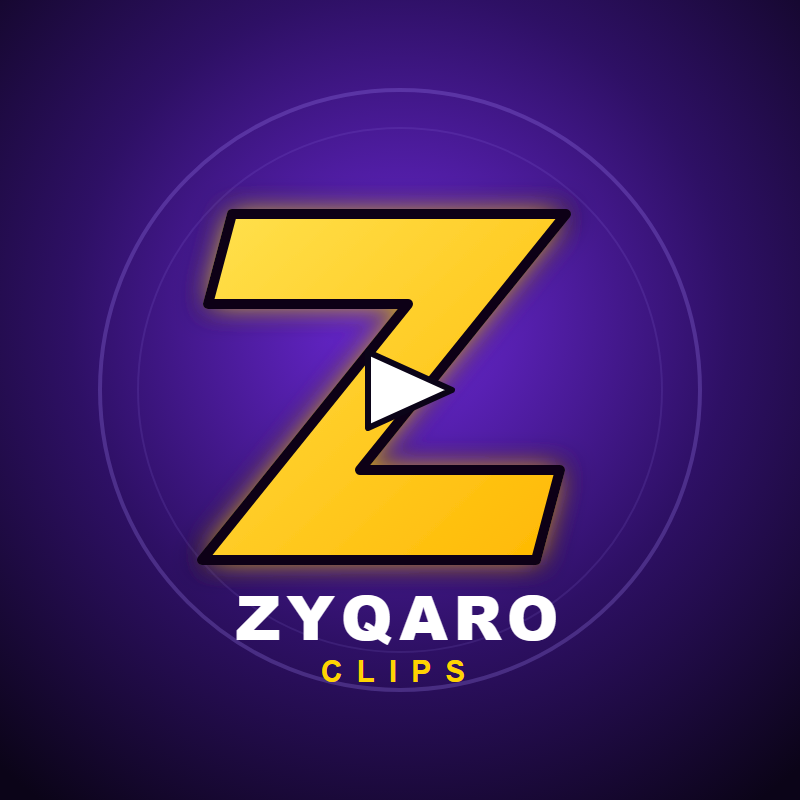

ClipAgentur
ClipAgentur ist ein internes Tool eines Einzelentwicklers. Es wählt beliebte öffentliche Twitch-Clips aus, schneidet sie ins Hochformat, ergänzt Untertitel und lädt sie als Shorts auf den eigenen YouTube-Kanal ZyqaroClips hoch.
Jedes Video verlinkt den Twitch-Kanal des Streamers und den Original-Clip. Verarbeitet werden nur Clips von Streamern, die dem Clippen zugestimmt haben. Wer einen Clip entfernen lassen möchte, erreicht mich unter der Adresse im Impressum.
Das Tool ist nicht öffentlich zugänglich und wird nicht an Dritte verkauft.
Diese Anwendung nutzt YouTube API-Dienste.